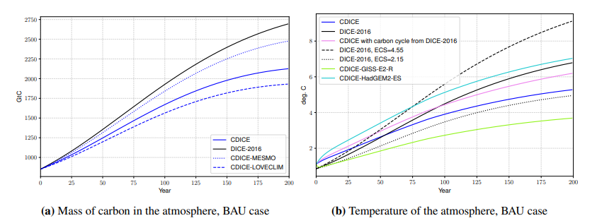
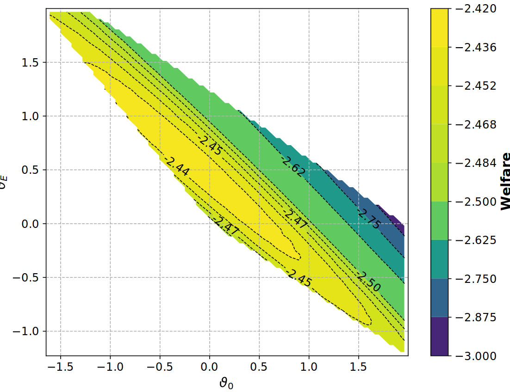
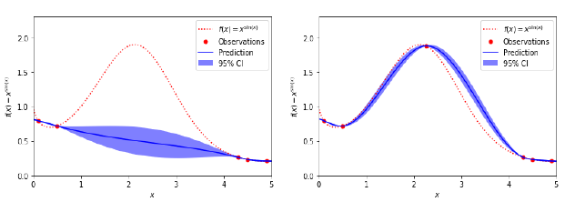
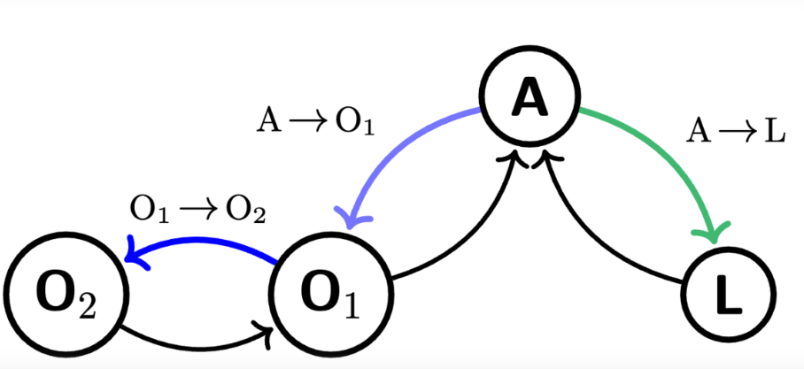
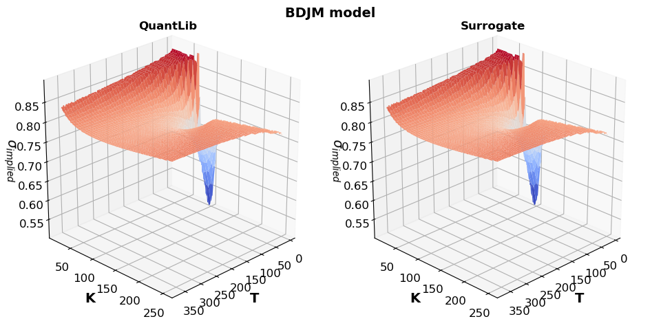
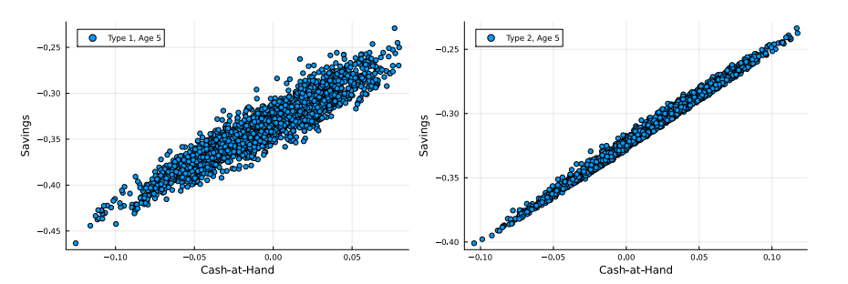
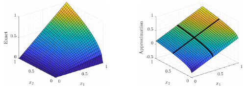
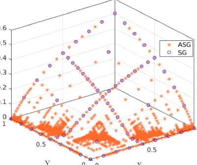
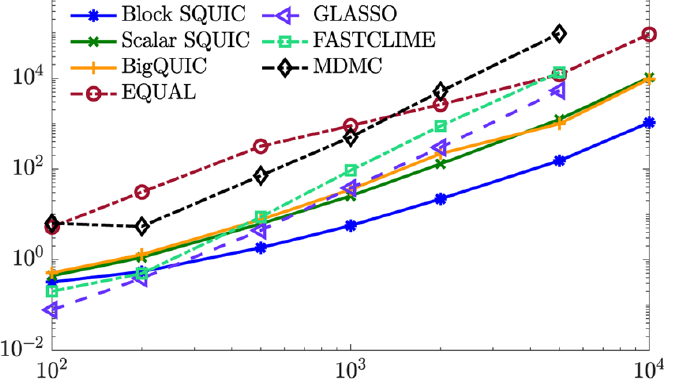
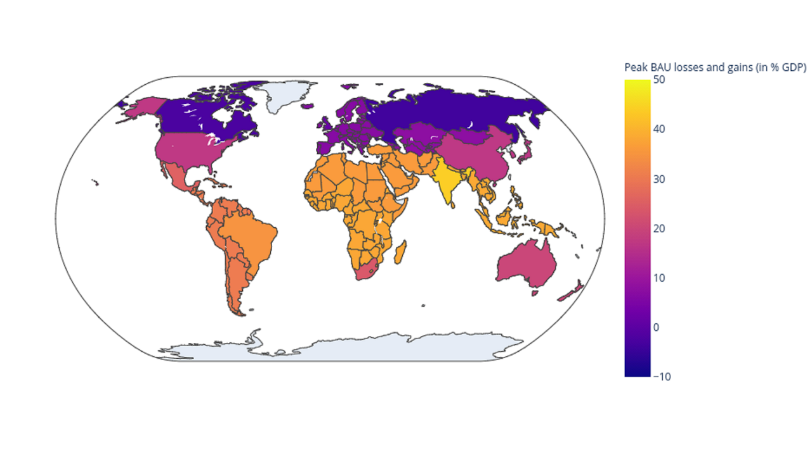

The Climate in Climate Economics
Deep Learning for Integrated Assessment Models


Deep Equilibrium Nets
Neural network approach to computing economic equilibria

Building Interpretable Climate Emulators for Economics
Interpretable ML models for climate-economy integration

Deep Surrogates for Finance: Option Pricing
Deep learning surrogates for financial applications

Self-Justified Equilibria: Existence and Computation
Computational methods for self-justified equilibria

High-Dimensional Dynamic Stochastic Model Representation
HDMR methods for high-dimensional economic models

Sparse Grids for Dynamic Economic Models
Handbook chapter with code on sparse grid methods


Can Today's and Tomorrow's World Uniformly Gain from Carbon Taxation?
Replication code for the carbon taxation study